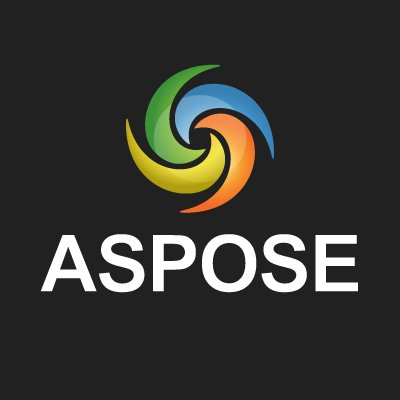
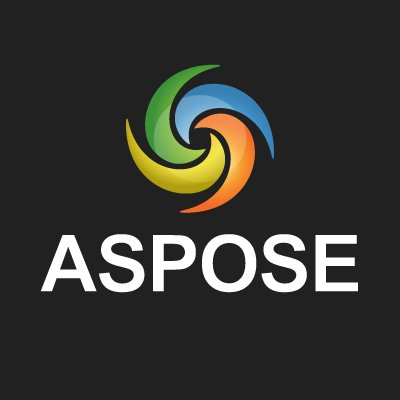
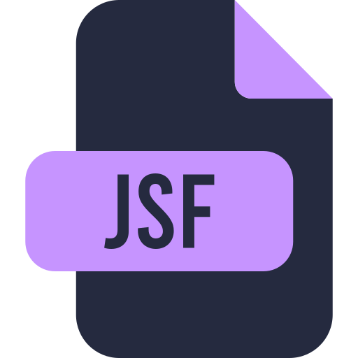
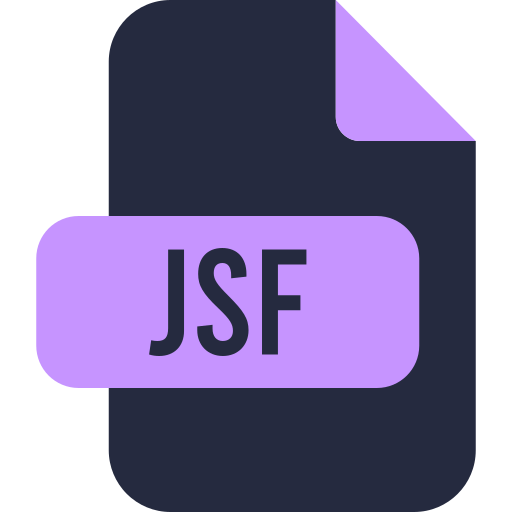
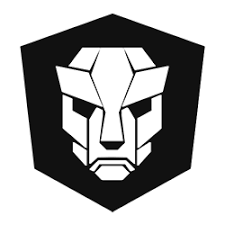
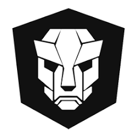
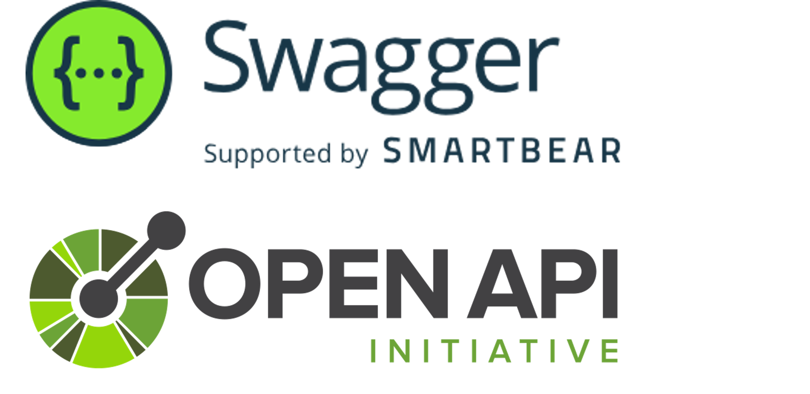
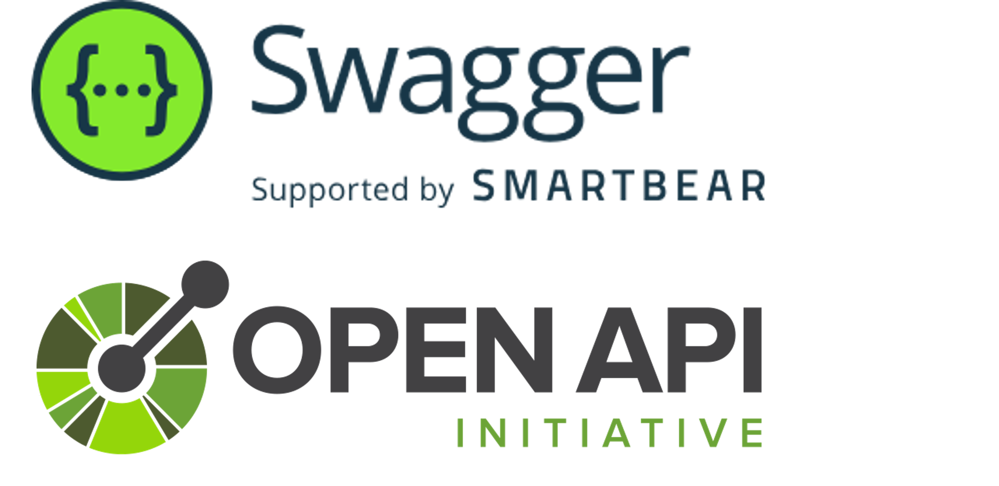

I'm Bennet.
a programmer.


I am a Fulltime Software Developer👨💻 and Solo Hobby Indie Game Developer👾.

During my studies in Computer Science for Digital Media and Games, I completed several games modules and courses: Artificial Intelligence for Game Development, Interdisciplinary Team Project, Game Dev Week Trier and Digital Games. In these modules I gained theoretical as well as practical skills in solo and team projects and found the fun in game development. I expanded these skills after the successful graduation and kept the fun in game development as a hobby indie developer.

Currently I work mainly with the Unity Game Engine in 3D and 2D area. Unity offers an easy entry into indie development, I have acquired various online courses for further education in development and design, which I use in my spare time to expand my knowledge as an indie developer.

In Unity C# as well as JS can be used. As programming language for Unity projects I have chosen C#, because the language has parallels to Java, which I mainly use in my studies and currently in my job.

Feel Jump is my first published solo game project on the mobile platform. The game served to give me the experience as a single person, independently executing every aspect of concept, planning, development, publishing and monitoring, as well as marketing and advertising campaigns. The experience the game brought was worth every effort and showed me how much work is behind the complete game development from concept to publishing and user acquisition.
Feel Jump - Play Store
Before I came to the IT sector, I completed an apprenticeship as an automotive mechatronics technician and worked there as a journeyman.

After my vocational baccalaureate at the vocational school for trade and technology, I studied Computer Science for Digital Media and Games at the University of Applied Science Trier.
I started working as a working student - software developer in the company and have gone through different areas, reporting team (Excel, SQL), backend monitoring of data (JSF, Primefaces, JavaEE), programming a RESTful service for document generation (Aspose, JavaEE, Maven, Git-CI/CD, Docker, Swarm, Swagger, OAS, JPA). I wrote my bachelor thesis: Implementation and integration of a datawarehouse to support the business intelligence process for a marketing and management system at the company (Java, PL-SQL, Tableau). After my bachelor's degree I started in the field of interface development as a software developer and work there until today.
 



 


 


 


In my spare time I constantly educate myself in various areas of software development.


If you like to code together on Freelance- or Hobby-Game-Projects or any other Projects.
Questions? Feel free to ask me!